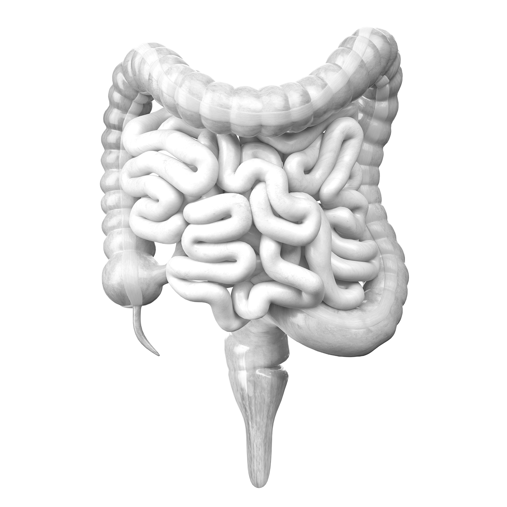
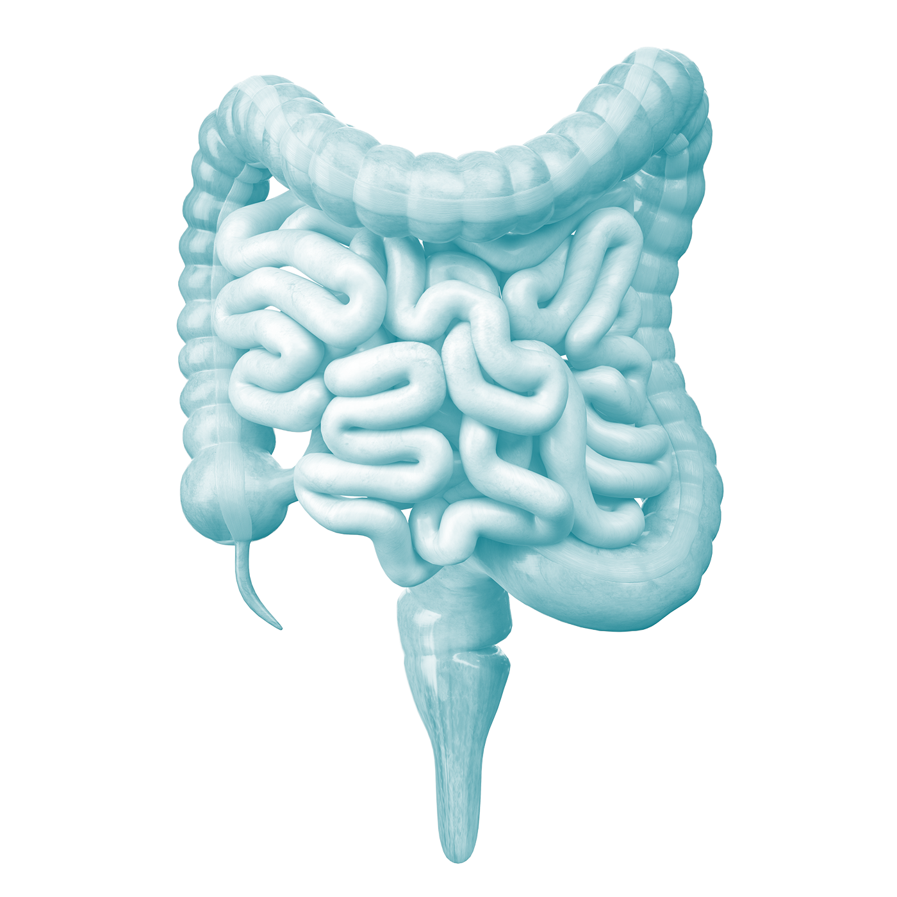

Une solution qui s'attaque enfin au
syndrome du côlon irritable.
Probaclac SCI — le probiotique cliniquement prouvé qui soulage le syndrome de l'intestin irritable dès 8 semaines. 10 milliards de bactéries actives par capsule.
 NPN 80140258
NPN 80140258
sur 5
souffre du syndrome du côlon irritable. Un trouble chronique qui affecte le quotidien de millions de personnes — et pour lequel les solutions efficaces restent rares.


Mais qu'est-ce que, réellement, le syndrome du côlon irritable?
Le syndrome de l'intestin irritable (SII) est un trouble fonctionnel chronique du système digestif. Il ne cause pas de dommages visibles à l'intestin, mais perturbe profondément la qualité de vie de ceux qui en souffrent — souvent en silence.
- gastroenterology Douleurs abdominales récurrentes — crampes, spasmes et inconfort liés aux contractions anormales de l'intestin.
- swap_vert Transit imprévisible — alternance entre diarrhée (IBS-D), constipation (IBS-C) ou les deux (IBS-M), sans schéma prévisible.
- air Ballonnements et gaz excessifs — distension abdominale qui s'aggrave après les repas et impacte le confort quotidien.
- psychology Impact psychologique majeur — anxiété, évitement social et fatigue chronique. Le SII affecte autant le corps que l'esprit.
- microbiology Déséquilibre du microbiote — la flore intestinale altérée joue un rôle central. C'est précisément là que les probiotiques ciblés interviennent.
Quand la science rencontre votre intestin,
les résultats parlent d'eux-mêmes.
Rigueur Scientifique
Étude randomisée, à double insu et contrôlée par placebo sur 251 adultes pendant 8 semaines. Six questionnaires cliniques validés.
Qualité de vie — SF-36
Bien-être émotionnel et fonctionnement social à la semaine 8.
Fréquence des selles par sous-type
IBS-D et IBS-C entre le départ, semaine 4 et semaine 8.
Participants évalués
Sous-types IBS-C, IBS-D et IBS-M. Randomisée, double insu, contrôlée par placebo.
IBS-D · Diarrhée
Réduction significative de la fréquence des selles après 8 semaines. (p<0.05 vs placebo)
IBS-C · Constipation
Augmentation de la fréquence avec réduction du besoin en laxatifs.
Toutes les souches résistent à un pH de 3 sans enrobage entéro-soluble. Les bactéries arrivent vivantes aux intestins.
Synthèse clinique Probaclac SCI
10 milliards CFU — souche cliniquement prouvée contre le SII.
L'équilibre intestinal redéfini.
Réduit la diarrhée de 21%
Fréquence des selles significativement réduite chez les IBS-D après 8 semaines.
Augmente le transit de 33%
Les IBS-C voient leur fréquence augmenter avec réduction du besoin en laxatifs.
Améliore la qualité de vie
Bien-être émotionnel et fonctionnement social mesurés par SF-36.
1 capsule / jour — sans allergènes
45 capsules végétales. Résiste à l'acidité gastrique sans enrobage. Fabriqué au Québec.
Prêt à reprendre le contrôle de votre intestin?
Disponible en pharmacie partout au Canada et sur Amazon. Une capsule par jour. Résultats dès 8 semaines.